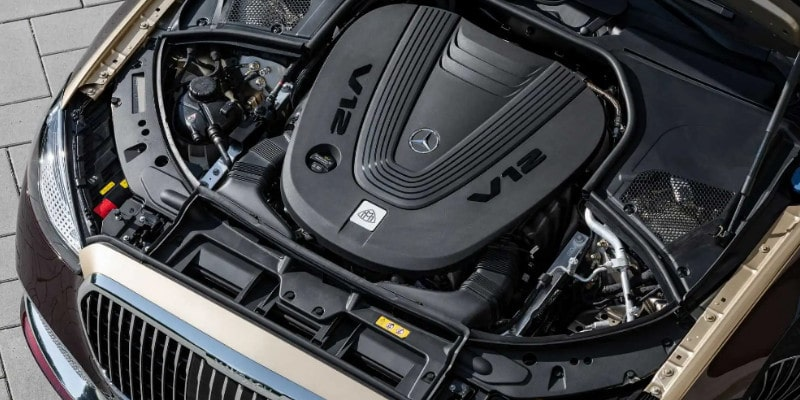

Il futuro non è green ma mixed
Introduzione
28 giugno 2024 - Mercedes torna a investire molto sui motori a benzina e diesel.
28 giugno 2024 - Reactions and analysis of Biden-Trump’s presidential debate.La scelta di Mercedes di ritornare ad investire su migliori motori endotermici è comprensibile, hanno capito che presto la follia del greenwashing tipica dei democratici americani andrà a svanire per un approccio più realistico e meno ideologico. Perché spegnere le ultime tre centrali nucleari in Germania non ha portato un grosso vantaggio alle vendite di oil & gas visto che i tedeschi sono tornati a sfruttare la lignite che hanno in casa per compensare sia il ridotto baseload sia il costo dell'energia. Ovviamente pagando il prezzo di una maggiore impronta ecologica. Grosso modo il concetto è simile anche in altri contesti a parte forse la Francia. Dove l'energia costa relativamente poco, si produce e si consuma.Dove costa relativamente troppo cara, si de-industrializza con tutte le conseguenze sistemiche del caso.
Meno lavoro, meno auto, meno benzina.
Il problema del lobbying attuale è la mancanza di pragmatismo che viene dal comprendere teorie non banali e piuttosto recenti. Se la speculazione non tiene conto della realtà, gli effetti di degradazione sistemica riducono il vantaggio della speculazione fino ad ottenere valori negativi. In un contesto del genere (cfr. link e mappa qui sotto), in assenza un meccanismo di compensazione, il prezzo dell'energia spot varia dai €3 della Francia ai quasi €500 della Germania, non è l'industria oil & gas a vincere ma la EDF.
Non tutto è perduto
Impianti che possono essere riattivati e stante le scorte di uranio della Francia potrebbero fornirle energia elettrica per 2.000 anni oppure fornire energia elettrica a tutta Europa per 100 anni. Certo in questo secondo caso servirebbero anche molte più centrali nucleari da far lavorare in parallelo. Ma è proprio questo il punto che alcuni paesi hanno capito e altri no. Il baseload elettrico, più sicuro e più ecologico, è quello nucleare di III+ generazione mentre i reattori sottocritici al torio basati sull'idea di Rubbia vanno bene per il processamento delle scorie e le grandi navi o le portacontainer. Il gas per il riscaldamento e il petrolio per le auto e materie plastiche.Mettere insieme in modo organico ecologia ed economia significa che ogni fonte energetica deve essere usata nel modo migliore secondo le sue peculiarità. L'opposto di prendere decisioni ideologiche come l'EV per la mobilità personale (auto) come transizione sistemica piuttosto che di nicchia. In generale, anche questo caso ci dimostra come sia deleterio per l'Occidente avere una direzione unica imposta da un singolo centro di potere che esso sia Washington piuttosto che l'OMS. Diversificazione!Aggiornamento
GLI USA IN GINOCCHIO SENZA ROSATOM12th September 2024 - Putin calls for export limits on Russian nickel, uranium and titanium. Russia’s president believes that restrictions on key metals would serve as retaliation against Western sanctions.Questa notizia è stata completamente trascurata nonostante sia di quasi 10 giorni fa. Invece, questo tipo di restrizioni può avere un grande impatto, soprattutto sull'economia degli Stati Uniti e sulla loro capacità di rifornirsi di energia dalle centrali nucleari. Attualmente, infatti, le centrali nucleari statunitensi funzionano con combustibile a uranio arricchito proveniente dalla Russia e fornito dalla società nazionale Rosatom. Inoltre, poiché le centrali nucleari negli Stati Uniti sono gestite da società private, per ridurre i costi hanno deciso di “comprare” piuttosto che “produrre”. Ciò significa che gli Stati Uniti non hanno abbastanza centrifughe per arricchire il minerale di uranio che potrebbero importare da qualche altra parte. Inoltre, per tagliare i costi, hanno mantenuto la catena di approvvigionamento “snella”, il che significa mantenere i magazzini il più possibile vuoti e affidarsi preferibilmente a forniture “su richiesta”.
Share alike
© 2025, Roberto A. Foglietta <roberto.foglietta@gmail.com>, CC BY-NC-ND 4.0